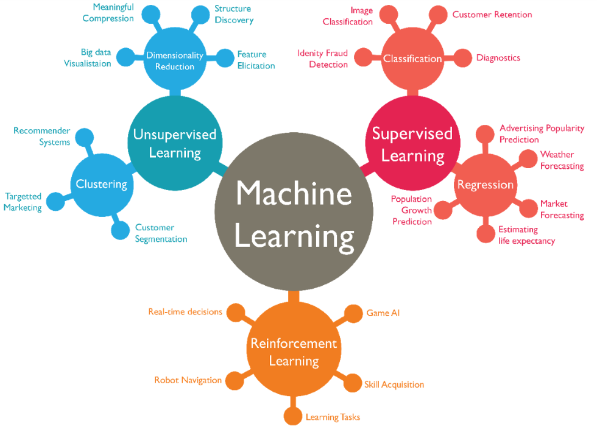
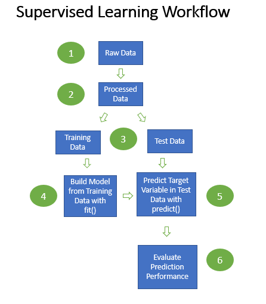
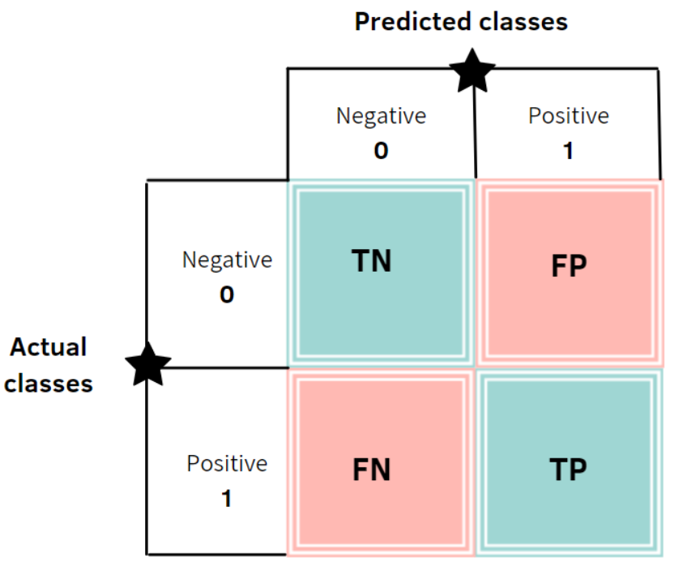

This is primarily a course about Python and not machine learning. While we don’t want to dive too deeply into what machine learning is and why it is popular, presenting an overview will help set the context ahead of the use case we’ll walk through.
Machine learning is a method of teaching computers to learn and make decisions on their own, without being explicitly programmed. It involves feeding a computer system a large amount of data and allowing the system to discover patterns and relationships in the data, and to use these patterns to make predictions or decisions. Machine learning is used in a wide range of applications, including image and speech recognition, natural language processing, and autonomous vehicles.
The above paragraph is itself an instance of AI at work! I asked the ChatGPT bot to “summarize machine learning in 100 words” and that’s what it came up with. While one can quibble with parts of it, the essence is quite good, and certainly plausibly human sounding. AI and machine learning is all around us already, mostly without our awareness of it. The image below shows the wide range of use cases that machine learning impacts today.

Types of machine learning use cases
Scikit-learn - also known as sklearn - is an open-source machine learning library for the Python programming language and is the new library we will access in this tutorial. It is built on top of other popular Python libraries such as NumPy and pandas, and it provides a wide range of tools and algorithms for tasks such as classification, regression, clustering, and dimensionality reduction.
While there are other libraries outside of sklearn that support machine learning in Python (e.g. PyTorch, Tensorflow), it is widely used in the data science community and is known for its ease of use and efficient implementation of algorithms.
Now that you know some of the basics, the best way to see how machine learning is done is through tackling a meaningful problem with some real data.
11.2 Defining a Problem
Imagine you are a server at a restaurant and want to maximize your tip-earning potential. Being able to predict which customers are more likely to leave you a big tip would definitely be useful! This is a nice, if simple, use case that machine learning can help us with.
Decisions, decisions!
It is also a classic “supervised” machine learning use case, where we will need to have both input and output data available to analyze. By supervised, we mean that in our data we have the target data, or outputs, that we want to be able to predict (see workflow for a supervised use case in the image below). You can also think of the workflow as a high level pipeline.

Supervised machine learning workflow
11.3 Getting necessary Data
We find out that there is a small, but thankfully clean and available dataset, made available by Seaborn. It contains restaurant visit data from 244 parties of customers to a given restaurant. Each row of data represents a restaurant visit by one party of one or more people. Below are the fields included in the dataset:
tip in dollars <– our target variable
bill in dollars
sex of the bill payer
whether there were smokers in the party
day of the week
time of day
size of the party
We already know that there is no missing data, so that’s great. Let’s run the sample() method on the dataframe to get a good balanced initial feel for the data.
# importing libraries for getting the data and pre-processing itimport seaborn as snsimport pandas as pdtips_df = sns.load_dataset('tips')tips_df.sample(10)
total_bill
tip
sex
smoker
day
time
size
192
28.44
2.56
Male
Yes
Thur
Lunch
2
52
34.81
5.20
Female
No
Sun
Dinner
4
99
12.46
1.50
Male
No
Fri
Dinner
2
90
28.97
3.00
Male
Yes
Fri
Dinner
2
30
9.55
1.45
Male
No
Sat
Dinner
2
232
11.61
3.39
Male
No
Sat
Dinner
2
12
15.42
1.57
Male
No
Sun
Dinner
2
13
18.43
3.00
Male
No
Sun
Dinner
4
190
15.69
1.50
Male
Yes
Sun
Dinner
2
143
27.05
5.00
Female
No
Thur
Lunch
6
11.4 Choosing between Regression and Classification
With our tip predictor project, there are two approaches we could take and we must decide which one to take at the outset. One approach is to predict the actual size of the tip one would expect to get. This is what would be known as a regression type problem. The other way is to define what constitutes a bigger tip from the outset and to predict how likely you would be to get that. This is called a classification type of problem. There is no correct answer: the model used is use-case dependent, and each will have their own pros and cons.
For this tutorial, we will structure the problem as a classification problem. One of the requirements of this is to have a binary classifier variable, which consists of a positive class and a negative class of the outcome we are wanting to predict. Time to start rolling up our coding sleeves and get into the pre-processing!
11.5 Pre-processing the Data
Let’s first take a look at a summary of the numeric data in the dataset, with a particular eye on the “tip” column, as that is the data we will want to transform:
tips_df.describe()
total_bill
tip
size
count
244.000000
244.000000
244.000000
mean
19.785943
2.998279
2.569672
std
8.902412
1.383638
0.951100
min
3.070000
1.000000
1.000000
25%
13.347500
2.000000
2.000000
50%
17.795000
2.900000
2.000000
75%
24.127500
3.562500
3.000000
max
50.810000
10.000000
6.000000
We see that the median tip is $2.90, so we will define anything above that amount as a big tip (positive class) and anything below as essentially not a big tip (negative class). That creates a nice balance, with roughly 50% of cases containing big tippers and the remaining 50% not.
To accomplish this, let’s run some code using lambda and apply() to compute a big tipper variable and then take another look at the dataframe.
tips_df['big_tipper'] = tips_df['tip'].apply(lambda x: 0if x <2.9else1)tips_df.sample(5)
total_bill
tip
sex
smoker
day
time
size
big_tipper
124
12.48
2.52
Female
No
Thur
Lunch
2
0
70
12.02
1.97
Male
No
Sat
Dinner
2
0
227
20.45
3.00
Male
No
Sat
Dinner
4
1
193
15.48
2.02
Male
Yes
Thur
Lunch
2
0
92
5.75
1.00
Female
Yes
Fri
Dinner
2
0
Well that seemed to work fine! The machine learning classification model that we will use can only use numeric data. You probably know from statistics that you can convert categorical variables into numeric ones by turning each of the subsets into discrete columns consisting of 1s and 0s. They are widely referred to as dummy variables. Dummies are like flags in the data, where 1 means a certain subset is “observed” and 0 means that particular subset is “absent”.
Fortunately, there is a method called get_dummies() in pandas that can transform all non-numeric variables easily. In the code below, we pass in the whole dataframe and it will do its thing.
tips_df = pd.get_dummies(tips_df)tips_df.head()
total_bill
tip
size
big_tipper
sex_Male
sex_Female
smoker_Yes
smoker_No
day_Thur
day_Fri
day_Sat
day_Sun
time_Lunch
time_Dinner
0
16.99
1.01
2
0
0
1
0
1
0
0
0
1
0
1
1
10.34
1.66
3
0
1
0
0
1
0
0
0
1
0
1
2
21.01
3.50
3
1
1
0
0
1
0
0
0
1
0
1
3
23.68
3.31
2
1
1
0
0
1
0
0
0
1
0
1
4
24.59
3.61
4
1
0
1
0
1
0
0
0
1
0
1
At this point, we could go ahead and eliminate some of these newly created columns. For example, we could drop “time_Lunch” as this is essentially computationally redundant to “time_Dinner”, just the exact obverse (i.e. if you know whether a meal was lunch or not, you know whether it was dinner or not) But we’ll leave that for now, their continued presence in the data will not harm the model.
11.6 Identifying Target Variable and Features
The next step is to define which variables are to be considered the independent variables (or features, in machine learning terms) and which singular dependent variable is the target variable that we want to predict. Otherwise, the program won’t know what variables are used to predict what.
Independent variables are usually best thought of as those which are known at the point of decision. In our use case, we want to predict whether a party is likely to be a big tipper when they arrive at the restauarant. At that point we likely know the number of people in the party, but not the total bill amount. So let’s identify the independent variables or features by dropping the variables ‘tip’, ‘total_bill’, and ‘big_tipper’ from an object we will call “X”. The dependent or target variable is easier to identify. That is simply “big_tipper”. We will assign that a “y”. Both “X” (typed usually as upper case X) and “y” (typed usually as lower case y) are widely used conventions in Python for these concepts.
Let’s use what we learned about the drop() method to create the features object and assign to y the single column containing the target “big_tipper” variable.
X = tips_df.drop(['tip', 'total_bill', 'big_tipper'], axis=1)y = tips_df['big_tipper']
One of the key requirements of supervised machine learning methods is to split the dataset up into training and test samples. Data splitting is an important part of data science as it helps us have confidence that the data predictions can be relied on. This is one of the things that separates machine learning from much traditional statistical analysis, where the focus is more on explaining, not predicting.
In the training set, the “machine” or “estimator” will “learn” which restaurant parties are more likely to be big tippers based on the set of features that come with it. Then that trained model will be applied to the set of features in the test set, predictions can be made, and how accurate they are can be analyzed.
Scikit-Learn makes it easy with its famous train_test_split() method. We apply it to our use case below:
from sklearn.model_selection import train_test_splitX_train, X_test, y_train, y_test = train_test_split(X, y, random_state=155, test_size=0.409)
The train_test_split() method takes the X and y that we defined above, and splits it randomly according to the relative size we want the test sample to be compared to the total sample size. The random_state parameter controls the shuffling applied to the data before applying the split. By changing the number, you will create a different mix of rows assigned to each train and test datasets. The test_size parameter specifies the size (as a percent, expressed as a decimal) that you want the test sample to be compared to the total data object.
In our example, we have chosen for the test sample to be 40.9% of the entire dataset. The percentage size you will choose will depend on a number of factors relating to the use case.
We now have four separate objects: train and test versions of X and train and test versions of y. It is a good idea to look at their shapes at this point so we can confirm that the sizes look correct.
The training objects have 144 rows of the original dataframe and the test objects have 100 rows. The X objects have 11 feature variables and the y objects consist of one-dimensional arrays, which show as “blank” to the right of the comma when reviewing object shape.
11.7 Fitting and Predicting
With these preprocessing steps now complete we can apply a classifier method to the training data. Scikit-learn has many classifier methods. For our example, we will use a machine learning algorithm called LogisticRegression(). Despite it having “regression” in the name, it is implemented here for classification rather than regression. In logistic regression, the dependent variable is a binary variable that contains data coded as 1 (yes, success, etc.) or 0 (no, failure, etc.).
In our code, we first call LogisticRegression() and then fit() method then attempts to fit the independent variables to the target variable in the training dataset. In the code below, we run the fitting process and then take that fitted algorithm to product predictions for our test data.
from sklearn.linear_model import LogisticRegressionreg = LogisticRegression()reg.fit(X_train, y_train)
LogisticRegression()
In a Jupyter environment, please rerun this cell to show the HTML representation or trust the notebook. On GitHub, the HTML representation is unable to render, please try loading this page with nbviewer.org.
LogisticRegression()
Now our we have a trained model and we can run that model on our test dataset. We enter X_test as an argument following the predict() and predict_proba() methods as in the code below. Let us look at the first five cases in our array of predictions:
y_predict = reg.predict(X_test) # makes a decision based on probabilityy_predict[:5] # first 5 prediction decisions in test dataset
array([1, 0, 1, 0, 1])
The output gives us an array of predictions for the first five cases in sequence in the test dataset. A value of 1 means that the model predicts the party to be a big tipper, and 0 predicts that it will not be a big tipper.
Each of the predictions is based on a discrete probability. The predict_proba() method returns the class probabilities for each data point. The number of probabilities for each row is equal to the number of categories in target variable (2 in our case).
y_predict_proba = reg.predict_proba(X_test) # computes a probability per casey_predict_proba[:5] # first 5 predictions in test dataset
We can see for each case a pair of probabilities, one for “0” and the other for “1”. For example, for the first set of diners in our test dataset, they had a 48.2% probability of leaving a low tip and a 51.7% chance of leaving a big tip. Because .517 is > .5, the model assigns a prediction to the “1” class. This detail helps us understand how the decisions with the predict() method are made.
11.8 Evaluating
Ok. We have our predictions… but are they good? Of course, what “good” means needs a bit of thought. There are many performance measures in data science and there are considerations based on the use cases themselves. There are a number of standard evaluation tools that are commonly used, however, and we will introduce a few in this tutorial.
One of the most common and useful performance scores is accuracy_score(), and it is fairly easy to interpret. It reflects that percentage of cases where the prediction of the model matches exactly the true labels of the sample.
from sklearn.metrics import accuracy_scoreprint(accuracy_score(y_test,y_predict))
0.68
In our case, it shows that 68% of the model’s 100 guesses in the test set (because there were 100 cases in the test set) were correct. A standard baseline comparison is to refer to the percentage of the most frequently occuring response. In our example, we designed it for there to be a 50% chance of a party being a big tipper in the overall dataset. In our test dataset, which was randomly created, there were 54% in that sample who were big tippers. We will use that percentage from our test sample as our baseline comparison. And since 68% > 54%, it appears that the model is definitely helping us make better predictions than just guessing would!
Another common performance measuring tool is the so-called “confusion matrix”.
from sklearn.metrics import confusion_matrixprint(confusion_matrix(y_test, y_predict))
[[35 11]
[21 33]]

Four quadrants of the confusion matrix
The confusion matrix shows how many guesses the model gets “right”, that is, the actual is true when it guesses true (TP - True Positive), and false when it guesses false (TN - True Negative). The remaining two quadrants show the errors. Type I error is the false positive error (FP - False Positive), where the model guesses true but reality is false. Type II error is where where the model guesses false but the reality is true (FN - False Negative).
Another widely used report is the classification report, which shows precision and recall, which are two widely reported metrics in machine learning and particularly helpful when examined together.
from sklearn.metrics import classification_reportprint(classification_report(y_test, y_predict))
Precision = True Positives / (True Positives + False Positives) A higher precision score is most valuable when you have the luxury of “cherry-picking” a potentially a small sub-sample of cases you want to be correct on. Say you were wanting to pick the winner of a sporting match. If you had a predictive model with high precision and the game you were interested in was chosen by your model, you would have confidence you were placing a good bet. It does not matter to you that your model is not great at picking all games correctly as you are happy to simply avoid ones you don’t have confidence in.
Recall (Sensitivity) = True Positives / (True Positives + False Negatives) High recall is important when your task needs to avoid mistakes that could be costly. A good example is disease detection. You are more concerned with avoiding failing to identify cases where a disease is present than you are concerned with mistakely identifying a disease to be present when it is not. You are ok with some false positives, but in this scenario, false negatives must be avoided!
Challenge 1
Given the tipping use case in this tutorial, which do you think is a more appropriate measure to use, precision or recall?
Solution to Challenge 1
It depends! If your goal is to try to make sure you can get a big tip each time you choose a customer, then precision is better. If your goal is wanting to avoid missing out on getting a big tipper, then recall is better.
So there we go, we have nice small proof of concept that we can likely develop a tool that will be helpful to meeting our needs. The next step could be to refine some of the code (e.g. to eliminate redundent columns) and to “tune the parameters” of the model, also creating test and train datasets of different sizes to optimize it. We might also want to improve the model using different estimators (e.g. something other than LogisticRegression) or perhaps several models together! And we ultimately will want to test how the model performs agains out of sample data as well. The development and refinement process can go on for some time before ultimately the development of a new data pipeline to automate the process and make it usable for end users.